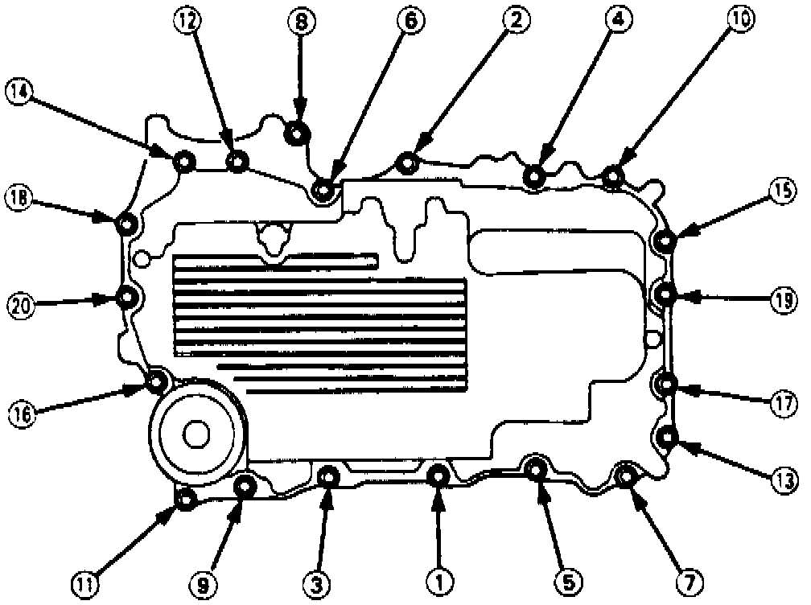

Oil Pan: Service and Repair
1. Obtain five digit radio theft protection code as described under Technician Safety Information.2. Disconnect battery cables, then remove battery from vehicle.
3. Remove radiator cap.
4. Raise and support vehicle, then remove front tire and wheel assemblies.
5. Remove damper forks, then separate ball joints from suspension lower arm.
6. Remove left and right driveshafts.
7. Raise vehicle, then remove engine slash shield.
8. Remove lower plate from under rear beam.
9. Drain engine oil, coolant and differential oil.
10. Remove vehicle speed and power steering speed sensors.
11. Disconnect differential oil cooler hoses.
12. Remove secondary cover and 36 mm setting bolt.
13. Set gear selector to PARK (auto trans) or 1st gear (manual trans).
14. Disconnect extension shaft from differential.
15. Remove differential mounting bolts and 26 mm shim, then the differential assembly.
16. Loosen A/C belt adjusting nut, then remove A/C belt.
17. Remove A/C compressor and position aside.
18. Remove intermediate shaft, then the engine stiffener.
19. Remove flywheel cover (manual trans) or driveplate cover (auto trans).
20. Remove oil pan attaching bolts, then the oil panel.
Fig. 87 Oil Pan Bolt Tightening Sequence:

21. Reverse procedure to install, noting the following:
a. Apply liquid gasket part No. 08718-0001, or equivalent, to cylinder block sealing surface and threads of attaching bolts. Do not apply liquid gasket to O-ring grooves.
b. Tighten oil pan attaching bolts in sequence, Fig. 87, to 16 ft. lb.
c. Apply clean engine oil on new O-rings, then install rings into grooves.
d. Wait at least 30 minutes after installing oil pan to refill engine oil.